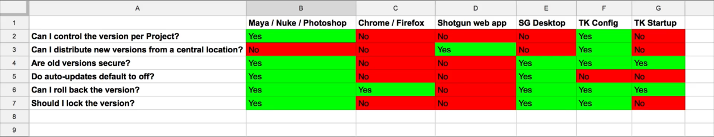

어떤 소프트웨어 버전을 잠가야 합니까
Installing and distributing Shotgun Desktop
이와 같은 스프레드시트를 사용하면 특정 소프트웨어 패키지를 특정 버전으로 잠글지 여부를 결정할 수 있습니다. 예를 들어 소프트웨어 자동 업데이트를 허용하거나 사용자가 직접 소프트웨어 버전을 설치할 수 있습니다.

첫 번째 칸에는 Maya Nuke와 Photoshop과 같은 DCC가 있습니다.
이전에 나는 소프트웨어 엔터티를 통해 프로젝트별로 실행되는 DCC 버전을 제어 할 수있는 방법을 보여주었습니다.
따라서 이전 소프트웨어 버전을 이전 프로젝트로 격리하고 새 프로젝트가 시작되면 새 소프트웨어 버전으로 쉽게 이동할 수 있습니다.
이전 DCC 버전에서는 보안 문제가 거의 없습니다.
But what about the shotgun web app and for that matter what about web browsers shouldn't we chase that responsible adult feeling all the way to a happy place where nothing ever changes. 하지만 샷건 웹 앱과 웹 브라우저는 어떻게 해야 할까요? 우리는 그 책임감 있는 어른의 느낌을 아무 변화도 없는 행복한 곳까지 추구해서는 안됩니다.
Yeah shouldn't we lock down our shotgun site and browsers to versions that we know play nice together. 네, 샷건 사이트와 브라우저를 함께 잘 작동하는 버전으로 잠궈서는 안 됩니다.
If you want to lock down the shotgun web app to a specific version all you have to do is email support. 샷건 웹 응용 프로그램을 특정 버전으로 잠그려면 이메일 지원만 하면 됩니다.
또한 자동 업데이트를 끄고 특정 버전의 설치 프로그램을 배포하여 스튜디오에 있는 모든 아티스트의 브라우저 버전을 잠글 수 있습니다.
다음은 Windows에서 Chrome을 관리하는 데 도움이 되는 제품으로, 이전 Firefox 버전을 설치하는 방법에 대한 몇 가지 정보를 제공합니다.
But before you dance off to that happy place let's take a look at some of the downsides. 하지만 여러분이 그 행복한 곳으로 춤추기 전에 몇 가지 단점을 살펴봅시다.
먼저, 다른 프로젝트에 다른 버전의 브라우저를 사용하는 방법은 없습니다.
즉, 브라우저 버전을 업그레이드 할 여유가 없습니다.
프로젝트 A가 끝나면 스튜디오에 있는 모든 사람을 업그레이드할 수 있습니다. 하지만 프로젝트 B도 진행 중이라면 어떨까요?
And studios can get stuck on antiquated software riddled with security and compatibility issues. 또한 보안 및 호환성 문제로 얼룩진 오래된 소프트웨어에 스튜디오가 걸릴 수 있습니다.
It's also a royal pain in the Kiester to reliably source old browser versions across OS platforms distribute them turn everyone's auto-updates off and stay on top of patches. 또한 모든 OS 플랫폼에서 이전 브라우저 버전을 안정적으로 소스화하고 배포하여 모든 사용자의 자동 업데이트를 해제하고 패치 위에 유지하는 것은 Kiester의 큰 고민거리입니다.
Chrome과 Firefox에서 일하는 좋은 사람들이 Auto 업데이트를 통해 패치를 즉시 배포하고, 당신은 따라잡기 위해 서두르는 몇 가지 끔찍한 인터넷 보안 문제가 항상 있을 것이다.
그래서 만약 나였다면, 나는 브라우저 버전을 잠그는 것을 피할 것이다.
Maybe you're only supporting Linux at a giant studio behind a firewall with super strict software policies and IT folks with extra time on their hands if that's the case then by all means do your thing. 어쩌면 당신은 엄청나게 엄격한 소프트웨어 정책을 가진 방화벽 뒤에있는 거대한 스튜디오에서 리눅스를 지원하고 있고, 그렇다면 반드시 여분의 시간을 가진 IT 담당자 만이 당신의 일을 할 것입니다.
Next let's look at the shotgun web app. 그럼 샷건 웹 어플을 보시죠.
You can see that some of the same downsides exist. 여러분은 같은 단점이 존재한다는 것을 알 수 있습니다.
The version can't be locked per project. 프로젝트별로 버전을 잠글 수 없습니다.
So again there's no good time to update. 다시 말하지만 업데이트할 시간이 없습니다.
An old versions might not be as secure. 이전 버전은 안전하지 않을 수 있습니다.
So should you let the shotgun web app auto update to. 샷건 웹 앱이 자동으로 업데이트되도록 해야 합니다.
Well there is one caveat that should be acknowledged. 인정되어야 할 한가지 주의사항이 있습니다.
Shotgun web app versions can't be rolled back. Shotgun 웹 앱 버전은 롤백할 수 없습니다.
It's practically impossible because of database migration issues and or Ruby or Postgres upgrades. 데이터베이스 마이그레이션 문제 및 Ruby 또는 Postgres 업그레이드로 인해 실질적으로 불가능합니다.
Additionally since updating shotgun site versions for your studio is incredibly fast and easy nothing has to be distributed or installed. 또한 스튜디오의 샷건 사이트 버전을 업데이트하는 것은 매우 빠르고 쉽게 배포되거나 설치할 필요가 없기 때문입니다.
When the time does come to upgrade it's a piece of cake. 업그레이드 할 때가 되면 식은 죽 먹기죠.
So upgrade paralysis is less of an issue. 업그레이드 마비는 그다지 문제가되지 않습니다.
Because of these and other reasons you may choose to opt out our auto update schedule and instead send an update requests via support emails when you aren't in the middle of a major delivery. 이러한 이유 및 기타 이유로 인해 당사의 자동 업데이트 일정을 선택하지 않고 주요 배달이 진행 중이 아닐 때 지원 이메일을 통해 업데이트 요청을 보내도록 선택할 수 있습니다.
On the other hand it's easier for us to provide support to you if you're on the latest version of shotgun. 반면에 샷건의 최신 버전을 사용하고 있다면 우리가 당신에게 지원을 제공하는 것이 더 쉽습니다.
We're also good at working closely with clients to patch critical issues and new releases quickly. 우리는 고객과 긴밀히 협력하여 중요한 문제와 새 릴리스를 신속하게 패치 할 수 있습니다.
So now that we've chatted about versioning and we recognize that it's imperative to lock versions of some types of software. 이제 버전 관리에 대해 이야기를 나누었고 일부 유형의 소프트웨어 버전을 잠그는 것이 중요하다는 것을 알게 되었습니다.
Like artist DCC and impractical to lock versions of other types like web browsers. 아티스트 DCC와 마찬가지로 웹 브라우저와 같은 다른 유형의 버전을 잠글 수 없습니다.
We can turn our attention to shotgun desktop and the toolkit configs. 샷건 데스크탑과 툴킷 구성으로 시선을 돌릴 수 있습니다.
Apply our newfound powers of deductive version locking reasoning and really dig in. 연역적 버전 잠금 추론의 새로운 힘을 적용하고 실제로 파고 들어보십시오.